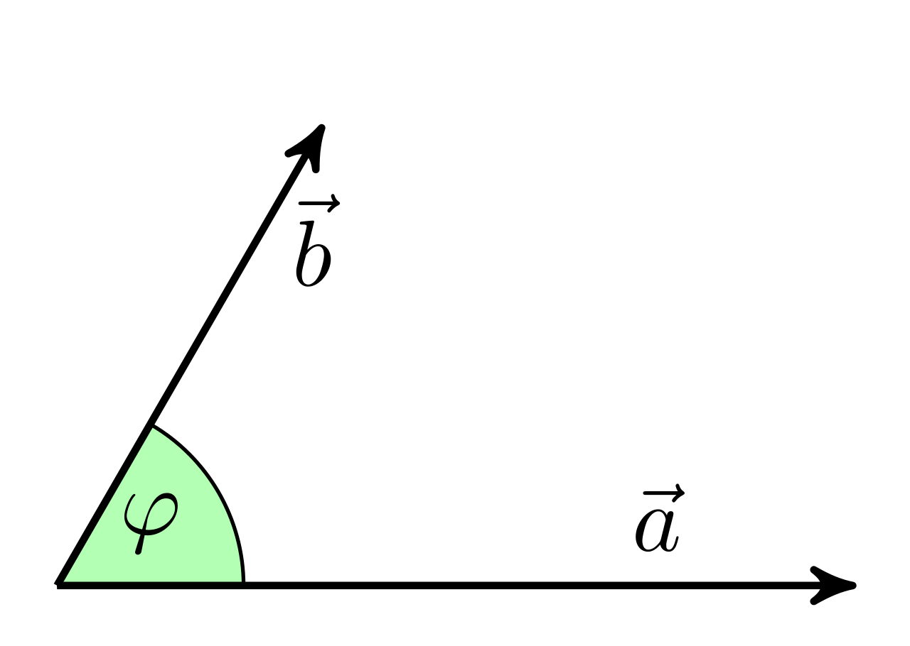

# keines :-)15 Theoretische Grundlagen neuronaler Netze
15.1 Lernsteuerung
15.1.1 Lernziele
Nach Abschluss dieses Kapitels …
- können Sie die theoretischen Grundlagen eines einfachen neuronalen Netzwerks erklären.
15.1.2 Überblick
Dieses Kapitel führt in die Grundlagen (einfacher) neuronaler Netze ein. Die Darstellung orientiert sich an James u. a. (2021). Viele der gezeigten Abbildungen stammen aus James u. a. (2021).1
15.1.3 Benötigte R-Pakete
15.2 Netzwerke mit einer einzelnen Zwischenschicht
Ein neuronales Netzwerk besteht auf
- einem Input-Vektor mit \(p\) Variablen \(X=(X_1, X_2, \ldots, X_p)\)
- einer nicht-linearen Funktion \(f(X)\)
- sagt einen Output-Vektor \(Y\) vorher.
Abbildung fig-islr10-1 zeigt ein einfaches sog. Feed-Forward-Neuronales-Netzwerk, um eine quantitative Output-Variable \(Y\) vorherzusagen anhand von 4 Prädiktoren. Das Netzwerk besteht aus drei “Schichten”, der Eingabeschicht (Input Layer), der Zwischenschicht (Hidden Layer) und der Ausgabeschicht (Output Layer). Jeder Kreis symbolisiert ein “Neuron”. In der Zwischenschicht in Abbildung fig-islr10-1 gibt es \(K=5\) Neuronen in der Zwischenschicht.
Künstliche Neurone
Die Idee der “Neurone” war namensgebend für Neuronale Netze. Ein biologisches Neuron gibt die Erregung (“feuert”) nur dann, wenn es über eine Schwelle erregt (aktiviert) wird. Analog sind “künstliche Neurone” in einem Neuronalen Netzwerk konzipiert. Sicherlich tun wir der gewaltigen Komplexität biologischer Neurone Unrecht, wenn wir die gedanklichen bescheidenen Einheiten künstlicher Neuronalen Netze auch als Neurone bezeichnen. Die (ursprüngliche ausschließlich vernendete) Logistische Funktion (mit sigmoiden Verlauf) setzt den “An-Aus-Mechanismen” biologischer Neurone um: Diese feuern nur oberhalb einer gewissen Aktivierung (und dann mit konstanter Stärke unabhängig von der Aktivierung).\(\square\)

Hinweis
Einfach gesprochen besteht ein neuronales Netzwerk aus einem System linearen Gleichungen, die aber jedes Mal noch durch eine einfache nicht-lineare Funktion gejagt werden. \(\square\)
Eine häufige Wahl für \(g\) ist die ReLU-Funktion (rectified linear unit), die ähnlich zum sigmoiden Verlauf des logististischen Funktion ist, s. Abbildung fig-relu.
Dieses Netzwerk (als Ganzes) hat folgende Struktur, s. Gleichung eq-nn1.
\[\begin{align} f(X) &= \beta_0 + \sum_{k=1}^K \beta_k h_k(X) \\ &= \beta_0 + \sum_{k=1}^K \beta_k g(w_{k0} + \sum_{j=1}^p w_{kj} X_j) \end{align} \tag{15.1}\]
Jedes Neuron der Zwischenschicht erfährt eine Aktivierung (##eq-nn1-akt):
\[A_k = h_k(X) = g(w_{k0} + \sum_{j=1}^p w_{kj} X_j) \tag{15.2}\]
Die Aktivierung eines Neurons ähnelt einer multiplen Regression, nur dass “zum Schluss” noch die nicht-lineare Sahnehaube.
Wichtig ist, dass \(g\) eine nicht-lineare Funktion ist, denn sonst würde das ganze Netzwerk “nur” ein lineares Gleichungssystem sein. Die nicht-lineare Funktion erlaubt aber ein viel flexibleres Verhalten, als es einer linearen Funktion möglich wäre.
“Fitten” eines neuronalen Netzwerk bedeutet, genau wie bei allen anderen Methoden des Maschinenlernens, die Parameter zu schätzen (berechnen). Wie bei jeder Methode des (überwachten) Maschinenlernen braucht es eine Fehlerfunktion, die minimiert wird. Für quantitative Y-Variablen wird zumeist die quadratische Fehlerfunktion verwendet, s. Gleichung eq-sq-err.
\[\sum_{i=1}^n(y_i - f(x_i)) \tag{15.3}\]
15.3 Multilayer-Netzwerke
Netzwerke mit mehreren Zwischenschichten bezeichnet man als Multi-Layer-Netzwerke. Theoretisch könnte ein Netzwerk mit nur einer Zwischenschicht, aber einer großen Zahl an Neuronen, fast alle denkbaren (oder zumindest sehr viele) Funktionen simulieren. Aber in der Praxis ist es einfacher, mehrere Schichten mit mittlerer Neuronen-Anzahl zu implementieren.
Abbildung fig-islr-10-4 zeigt ein Multilayer-Netzwerk, um die MNIST-Ziffern vorherzusagen. Im Gegensatz zu Abbildung fig-islr10-1 …
- besitzt es zwei Zwischenschichten, \(L_1\) (256 Neurone) und \(L_2\) (128 Neurone).
- hat es 10 Ausgabe-Neurone in der Output-Layer, die den 10 Ziffern (0-9) entsprechen sollen.
Die Aktivierung \(A\) der \(k^{(1)}\) Neurone in der ersten Zwischenschicht gleicht dem einfachen Netzwerk oben (vgl. Gleichung eq-nn1 und Gleichung eq-nn1-akt), s. Gleichung eq-nn2-l1:
\[\begin{align} A_k^{(1)} &= = h_k^{(1)}(X)\\ &= g(w_{k0}^{(1)} + \sum_{j=1}^p w_{kj}^{(1)} X_j) \end{align} \tag{15.4}\]
für alle \(k_1, k_2, \ldots, K_1\) Neurone der ersten Zwischenschicht. Für die zweite Zwischenschicht, \(L_2\) gilt das analog: Die Aktivierung der Neurone der vorherigen Schicht werden als Input verwendet und auf dieser Basis wird die Aktivierung des jeweiligen Neurons der aktuellen Schicht berechnet, s. Gleichung eq-nn2-l2:
\[\begin{align} A_l^{(2)} &= h_l^{(2)}(X)\\ &= g(w_{l0}^{(2)} + \sum_{j=2}^p w_{lj}^{(1)} X_j) \end{align} \tag{15.5}\]
für alle \(l = 1, 2, \ldots, K2\) Neurone der zweiten Zwischenschicht.
Da sammeln sich schnell eine große Zahl an Parametern:
\(\newcommand{\matr}[1]{#1}\)
\(\matr{W_1}\) in Abbildung fig-islr-10-4 repräsentiert die Matrix mit allen (“Regressions”-)Gewichten (und “Intercepts”) on der Input-Layer zur ersten Zwischenschicht. Diese Matrix umfasst \(785\times256=200\,960\) Koeffizienten (785=784 “Regressions-”Gewichte plus 1 Intercept-Term, auch “Bias” genannt).
Entsprechend weist jedes Neuron der zweiten Zwischenschicht ein Gewicht zu jedem Neuron der ersten Zwischenschicht auf. Daher hat \(\matr{W_2}\) die Dimensionen \(257 \times 128 = 32\,896\).
Jetzt gelangen wir zur Output-Layer; dort gibt es 10 Ausgabe-Neuronen. Hier sind zwei Schritte nötig. Schritt 1 besteht darin für jedes der 10 Neurone ein lineares Modell zu berechnen, basierend auf den Gewichten der vorherigen Zwischenschicht:
\[\begin{aligned} Z_m &= \beta_{m0} + \sum_{l=1}^{K_2} \beta_{ml} h_l^{(2)}(X) \\ &= \beta_{m0} + \sum_{l=1}^{K_2} \beta_{ml} A_l^{(2)} \end{aligned} \tag{15.6}\]
mit \(m = 0,1, \ldots, 9\). Diese \(129 \times 10 = 1290\) Koeffizienten sind in der Matrix \(\matr{B}\) gespeichert.
Schritt 2 fehlt noch. Wir möchten ja, dass die Ausgabe für jede Ziffer in einer Wahrscheinlichkeit besteht, das kann man mit der Softmax-Aktivierung erreichen (Gleichung eq-softmax):
\[f_m(X) = Pr(Y=m|X) = \frac{e^{Z_m}}{\sum_{l=0}^9 e^{Z_l}}, \tag{15.7}\]
mit \(m=0,1, \ldots, 9\).
Die zu minimierende Funktion (“Loss Function”) ist im Falle qualitativer Variablen keine metrische Quadratfunktion, sondern man miniert die Kreuzentropie, vgl. Gleichung eq-ce.
Das Netzwerk hat insgesamt über 200k Parameter! Und das bei gerade mal 60k Bildern. Wenn da das Modell keine Overfitting-Party macht, weiß ich auch nicht.
Gegenmaßnahmen zum Overfitting sind also dringend nötig, besonders bei neuronalen Netzwerken.
15.4 Mathematik neuronaler Netzwerke
Neuronale Netzwerke basierend auf zwei Konzepte: Lineare Algebra und Ableiten (Infinitesimalrechnung).
15.4.1 Punktprodukt
Im YouTube-Kanal von 3b1b gibt es eine exzellente Einführung in die lineare Algebra.
Die zentrale Operation ist das Dot Product (Skalar- oder Punktprodukt), s. Abbildung fig-matrixmult.
Im einfachen Fall (der euklidischen Ebene) gilt:
\(\vec a \cdot \vec b = \begin{pmatrix} a_1 \\ a_2 \end{pmatrix} \cdot \begin{pmatrix} b_1 \\ b_2 \end{pmatrix} = a_1 b_1 + a_2 b_2.\)
Beispiel 15.1 (Einfaches Punktprodukt) Gegeben seien zwei Vektoren \(\vec x=(1,2,3)\) und \(\vec y=(1,2,3)\). Das Punktprodukt von \(x\) und \(y\) ist die Summe der Produkte der jeweilige Paare, s. Abbildung fig-dot.
\(\vec x \cdot \vec y = 1\cdot1 + 2\cdot 2 + 3 \cdot 3 = 1 +3+ 9 = 13. \qquad \square\)

Geometrisch gesprochen entspricht das Punktprodukt dem Ausmaß, in dem zwei Vektoren in die gleiche Richtung zeigen:


Bildquelle: Martin Thoma, Wikipedia, CC-BY 3.0
Hinweis
Eine (etwas ausführlichere) geometrische Erklärung findet sich z.B. bei Math is Fun. Für Einsteiger interessant ist auch die Erklärung von Kalid Azad. Eine 3D-Darstellung von Vektoren findet sich hier. \(\square\)
In R kann man das Punktprodukt mit dem %*%-Operator berechnen
Im Paket geometry gibt es alternativ eine entsprechende Funktion, dot:
geometry::dot(x, y)
## [1] 14Definition 15.1 (Punktprodukt) Das Produkt zweier Vektoren \(\mathbf{a}\) und \(\mathbf{b}\) ist so definiert, Gleichung eq-dot. \[{\displaystyle \mathbf {a} \cdot \mathbf {b} =\sum _{i=1}^{n}a_{i}b_{i}=a_{1}b_{1}+a_{2}b_{2}+\cdots +a_{n}b_{n}} \qquad \square \tag{15.8}\]
15.4.2 Matrixmultiplikation
Multiplizert man zwei Matrizen, so kann man das als mehrfaches Punktprodukt auffassen, s. Abbildung fig-matrixmult.
Tipp
Probieren Sie diesen Matrizenrechner aus zur Berechnung des Punktprodukts bzw. der Matrizenmultiplikation. \(\square\)
15.4.3 Regression als Matrixmultiplikation
Die (einfache oder multiple) Regression kann man als Matrixmultiplikation auffassen. Schauen wir uns dazu ein einfaches Beispiel an.
Der Datensatz d besteht auf einer Outcome-Variable, y sowie einem Prädiktor, x; drei Beobachtungen umfasst die Tabelle, s. Tabelle tbl-d. Eine Regression mit einem Prädiktor hat zwei Koeffizienten, \(\beta_0, \beta_1\).
d
| x | y | b0 |
|---|---|---|
| 1 | 1.1 | 1 |
| 2 | 2.2 | 1 |
| 3 | 2.9 | 1 |
Speichern wir uns die Modellkoeffizienten, \(\beta_0, \beta_1\) in einem Objekt \(\mathbf{\beta}\) ab:
lm1_coefs <- lm1$coefficients
lm1_coefs
## (Intercept) x
## 0.2666667 0.9000000Die vorhergesagten Werte des Modells, \(\matr{\hat{Y}}\)
predict(lm1)
## 1 2 3
## 1.166667 2.066667 2.966667Jetzt bauen wir das Modell mit Matrixmultiplikation nach.
Dabei müssen wir für den Intercept eine Spalte mit nur 1 ergänzen und erhalten die Matrix für die X-Werte (pro Beobachtung), \(\matr{X}\):
x_matrix <- d |>
select(b0, x) |>
as.matrix()
x_matrix
## b0 x
## [1,] 1 1
## [2,] 1 2
## [3,] 1 3Dann multiplizieren wir die Matrix mit den X-Werten mit der Matrix (Vektor) mit den Modellkoeffizienten. So erhalten wir die vorhergesagten Y-Werte, $:
y_pred <- x_matrix %*% lm1_coefs
y_pred
## [,1]
## [1,] 1.166667
## [2,] 2.066667
## [3,] 2.966667In Mathe-Sprech sieht das so aus:
\(y = \beta_0 \cdot 1 + \beta_1 \cdot x_1\).
In Matrixschreibweise sieht das dann so aus:
\(\matr{\hat{Y}} = \matr{X} \cdot \matr{\matr{\beta}}\)
Ausgeschrieben als Gleichungssystem:
| y_hat |
|---|
| 1.17 |
| 2.07 |
| 2.97 |
\(=\)
| b0 | x |
|---|---|
| 1 | 1 |
| 1 | 2 |
| 1 | 3 |
\(\cdot\)
| beta |
|---|
| 0.27 |
| 0.90 |
15.5 3b1b
Im YouTube-Kanal von Grant Sanderson 3blue1brown gibt es eine exzellente Einführung (bestehend aus 4 Videos zu je ca. 15 Min.) in die Theorie der neuronalen Netze.
15.5.1 Video 1
15.5.2 Video 2
15.5.3 Video 3
15.5.4 Video 4
Anspruchsvoller; mathematische Grundlagen von Backpropagation (parzielle Ableitung)
15.6 Vertiefung
Francois Chollet hat eine nützliche, zugängliche und (zum Einstieg) umfassende Anleitung zum Thema neuronale Netze mit R bzw. mit Python geschrieben (Chollet, Kalinowski, und Allaire 2022; Chollet 2021).
Es finden sich viele weitere Lehrbücher für Einsteiger und Fortgeschrittene, z.B. Kulkarni und Shivananda (2021), Gallatin und Albon (2023). Bekannt ist auch Géron (2023). Der Großteil der entsprechenden Werke nutzt Python, nicht R.
Eine einsteigerfreundliche Anleitung zur Matrixmultiplikation findet sich bei Kalid Azad, betterexplained.com. Auf Wikipedia finden sich einige einsteigerfreundliche Illustrationen.
Die Videos von vcubingx zum Thema Neuronale Netze sind empfehlenswert.
Chollet, François. 2021. Deep Learning with Python. Second edition. Shelter Island, NY: Manning.
Chollet, François, Tomasz Kalinowski, und J. J. Allaire. 2022. Deep Learning with R. Second edition. Shelter Island, NY: Manning Publications Co.
Gallatin, Kyle, und Chris Albon. 2023. Machine Learning with Python Cookbook: Practical Solutions from Preprocessing to Deep Learning. Beijing Boston Farnham Sebastopol Tokyo: O’Reilly Media.
Géron, Aurélien. 2023. Praxiseinstieg Machine Learning mit Scikit-Learn, Keras und TensorFlow: Konzepte, Tools und Techniken für intelligente Systeme. Übersetzt von Kristian Rother und Thomas Demmig. 3., aktualisierte und erweiterte Auflage. Heidelberg: O’Reilly.
James, Gareth, Daniela Witten, Trevor Hastie, und Robert Tibshirani. 2021. An Introduction to Statistical Learning: With Applications in R. Second edition. Springer Texts in Statistics. New York: Springer. https://link.springer.com/book/10.1007/978-1-0716-1418-1.
Kulkarni, Akshay, und Adarsha Shivananda. 2021. Natural Language Processing Recipes: Unlocking Text Data with Machine Learning and Deep Learning Using Python. Second edition. New York: Apress.